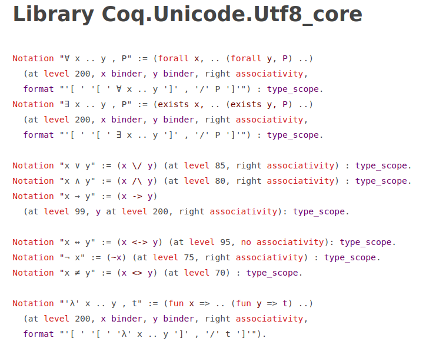
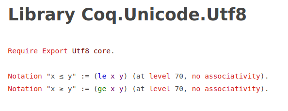

A thesis submitted in fulfilment of the requirements for the degree of Bachelor of Science.
School of Science.
College of Science, Engineering and Health.
RMIT University.
July 2021
This thesis is also in PDF form
I certify that except where due acknowledgement has been made, the work is that of the author alone; the work has not been submitted previously, in whole or in part, to qualify for any other academic award; the content of the thesis is the result of work which has been carried out since the official commencement date of the approved research program; any editorial work, paid or unpaid, carried out by a third party is acknowledged; and, ethics procedures and guidelines have been followed.
Signed: Sam Nolan
Date: 08/08/2020
I would like to acknowledge my supervisor Maria Spichkova for her guidance and high expectations for this project. I would also like to thank Flora Salim for inspiring me to further invest myself into research and never stopping in opening doors for me.
When building software systems, one of, if not the most important aspect is determining the correctness of the software built. Software is correct if, given some specification, the software implements that specification.
For some systems, being correct is more important than others. Being correct may not be as important in an application managing tasks in comparison to the software running in safety-critical systems such as pacemakers, the internal components of cars or software that runs on space equipment. If these systems fail, it could mean the loss of a substantial amount of money or serious injury or death. As of such, more effort should be put into ensuring that safety-critical systems are correct.
There is a variety of methods that are valuable in ensuring software correctness, and one the most powerful methods of doing so is through the use of Formal Methods. Formal Methods is using methods from mathematics to prove properties of correctness of software and hardware systems.
Formal Methods can include writing down a specification for your software, and proving by hand that the software that you built (or a section of the software) correctly implements that specification. This type of work is invaluable not only to check the correctness of software, but also help the developer to understand the software that they just built.
Computers have also been used to prove correctness properties of systems. Two main types of formal methods exist in this category. Model Checkers and Theorem Provers.
Model Checkers allow specifying your system as a state machine, and can automatically prove that your code matches this specification. Model Checkers are therefore limited in scope, as a state machine is often not complicated enough to represent arbitrary computer programs. Model checkers are however used in industry to verify properties of software systems, such an ensuring that an asynchronous system will never deadlock. Examples of model checkers include SPIN and Alloy. Model checkers often vary in their scope.
Theorem provers can be, as the name suggests, help prove theorems about your code in the same way that someone with a pen and paper would. Because computer programs can be represented as logic, (such as Logic of Computable Functions or Calculus of Constructions). There is actually a duality with mathematics and programming that allows theorem provers to not only verify the correctness of computer systems but prove real math theorems, and they have been used with success in both categories.
Although the distinction is not completely clear cut, theorem provers fall into two large main categories. Those categories are Automated Theorem Provers, and Interactive Theorem Provers.
Automatic Theorem Provers attempt to take a specification and a computer program and prove that the program meets the specification without user input. This is fantastic if it works, but sadly verifying software is an undecidable problem, and Automatic Theorem Provers do not always succeed in finding a proof or disproof for whether the code meets its specification.
Interactive Theorem Provers allow the user to interactively prove that a specification is satisfied by a computer program. This is akin to the user writing a proof for correctness on pen and paper, except that the program only allows the user to input a correct proof. With the guidance of humans, Interactive Theorem Provers allow the verification of very large scale projects. Developments in mathematics have been done in theorem provers as well.
Interactive Theorem Provers (ITPs) provide a unique challenge as they require interacting with the user. The user and the ITP have to work together to attempt to verify the software. When a user is involved, usability must be considered.
ITPs offer an opportunity to verify large scale software and hardware systems for correctness, and as software systems only get larger, ITPs could be a solution to ensuring quality and correctness of software that’s produced.
ITPs have already been used to verify crytographic libraries, compilers and microkernels.
However, although ITPs have been used in several large scale projects, use of ITPs is far from commonplace. This thesis is a diagnostic attempt at discovering reasons for the lack of uptake, in order to decipher how we can encourage the usage of ITPs and ensure more correct software in industry.
In this thesis, we investigate the usability of ITPs. Usability is often quite a vague concept, but in this thesis we define it widely. We define usability as: “The ease for which a program can be used for it’s intended purpose,” which therefore can include things like the scope of features currently supported by the theorem prover.
We attempt to answer this question by in a sense “cross polinating” ITP ideas, comparing theroem provers up against each other across many different dimensions in order to decipher promising directions for the improvements of ITPS.
The research questions for this thesis are:
RQ1 What usability issues and solutions have been mentioned in literature regarding ITPs?
RQ2 Do these usability issues and solutions still exist in the ITPs?
RQ3 Can problems/solutions that have been found in some ITPs be relevant for others?
ITPs are very interesting pieces of software
A full review of ITPs in Formal Methods was conducted by Nawaz (Nawaz et al. 2019).
It should be noted that although ITPs can verify the correctness of software, they also can prove more mainstream mathematical theorems. As of such, there are two communities of users of ITPs. Those interested in using ITPs to study mathematics, and those interested in using ITPs to formally verify software.
ITPs have been used to achieve many ends within mathematics, giving a proof for the Four Colour Theorem with Coq. Flyspeck project,
In terms of computing, a fully verified microkernel was developed in Isabelle/HOL named SeL4, a formalization of the Java Programming Language. A list of Isabelle projects can be found here: https://isabelle.in.tum.de/community/Projects. Coq has also been used to make Compcert, a fully verified C compier.
For hardware, HP used Isabelle/HOL on the HP 9000 line of of server’s Runway Bus.
There are several ways one can formally specify and verify the properties of a software system. These methods are called Formal Methods. An overview of the hierarchy of formal methods is shown in figure [fig:formal_methods].
First of all, Formal methods can be concerned with specification or verification. Specification is putting requirements of a software system into a formal representation. Specification Languages include Z (Potter, Sinclair, and Till 1992) or VDM (Jones 1990). Specification is an important process and is required for verification. A specification is considered "valid" if it correctly describes the required behaviour of the system. If the specification is not valid, then proving that the code follows that specification will not produce correct software.
Verification is ensuring that the implementation correctly follows the specification. Verification can be done with Model Checkers, Automated Theorem Provers and Interactive Theorem Provers. These three techniques are a trade off in two dimensions: user interaction and scope.
Model Checkers and Automated Theorem Provers generally do not require user interaction and attempt to verify that a specification holds for a system automatically. These two techniques however cannot be used to solve all problems. ITPs can be used to prove that a specification is correctly implemented, but requires user interaction to guide the proof process.
The distinction between ATPs and ITPs is however not clear cut. ATPs can often include minor user interaction in order to correct it’s path and find a proof. ITPs often have automatic features and can even call external ATPs to discharge proof obligations.
ITPs all have the goal of helping the user prove mathematical theorems.
There are several types of ITPs (J. S. Aitken et al. 1998), which correspond to different paradigms for proving propositions. "Proof as Programming" refers to writing a script, not unlike a computer program, that when run completes the proof. "Proof as Structure Editing" refers to directly editing proof obligations until you can discharge them, like interacting with a tree.
Although there are many ITPs that acheive proof in different ways, there are general themes among these ITPs that are important to understand before moving forward.
Cognitive Dimensions of Notation is a framework used to evaluate the effectiveness of notations (Green and Petre 1996), that is, ways of writing down information. The notation was originally proposed by Green as a way of discussing the design tradeoffs of visual programming languages, but has been applied elsewhere for a variety of notations. These dimensions are not an evaluation framework for notations, as often increasing one dimension will also change other dimensions, and different tasks may require different dimensions. For instance, in textual ITPs, dependencies are not shown between theorems, and doing so would increase the Diffuseness of the notation, allowing less to be shown and understood on a single screen. However, debugging why some theorem might fail given a change in other theorems would aid from a more diffuse representation showing the hidden dependencies.
Cognitive Dimensions focus mainly on the way that users understand and work with the meaning of the program. Cognitive Dimensions make an important distinction between difficulties of understanding and working with the notation vs difficulties with the actual problem itself. Because proving theorems is a very cognitively demanding task, that no matter how perfect the notation will always have an inherit difficulties. We can only try and improve the notations rather than making the actual problems easier.
The notation has been adopted as a way of evaluating the usability of ITPs in Kadoda PhD Thesis (G. F. Kadoda, Stone, and Diaper 1999). The interpretation of Cognitive Dimensions in regards to ITPs has been inspired by their work, but has some notable differences.
The Cognitive Dimensions of Notation are:
Does the ITP offer ways of abstracting components? Abstraction here refers to methods, classes and encapsulation. Green classifies notations as either being abstraction-hating, abstraction-tolerant or abstraction-hungry. An abstraction-hating ITP would be one that forces you to work with low level constructs often. An abstraction-tolerant ITP would be one that gives some methods for abstraction, but still nevetheless requires constant low level interaction. An abstraction-hungry ITP would offer many methods of abstraction, that could even in the end obscure what is actually happening behind the scenes.
Closeness of Mapping is how similar the notation is to the problem domain. At some point, a representation of the problem has to be put into notation suitable for the ITP. The easier this is to do the better the closeness of mapping, or how close the proof state is represented vs what the user would expect.
Once you know the basics of an ITP, how much of the rest can be inferred? A notation that is not consistent would require constant lookup of features in the theorem prover. Consistency is particularly important for learning ITPs. Consistency can become an issue when there are a large amount of abstractions.
Is it easy to make careless mistakes? A common "careless mistake" in theorem provers is trying to apply a tactic in a textual theorem prover that is not valid for the current proof state.
How much does it represent a proof relative to the complexity of the proposition proven? This is an easier cognitive dimension to measure, and represents the verbosity of the notation. ITPs with high diffuseness often have lower abstractions and are easier to understand, but more difficult to change.
Are there parts of the notation that require getting out a pencil and paper to understand what it means? The domain of ITPs by it’s very nature requires Hard Mental Operations, so it’s important to separate the inherit difficulty vs difficulty created by the notation. Hard Mental Operations may arise out of particularly complicated tactics, especially since tactics can be composed together. An ITP with a consistent set of tactics would reduce Hard Mental Operations.
Are there dependencies in the notation that are not presented? In ITPs and programming languages, it’s usually possible to find what a function/lemma references, but is difficult to find what lemmas/functions reference the one we are working in. Furthermore, automation often uses lemmas in the context without indicating at all that it is using them. This makes the issue of hidden dependencies even more difficult. An ITP with low hidden dependencies makes these dependencies between parts of the program explicit
Does the notation force the user to make decisions before they have the information they need to make it? Especially for novice users, ITPs need to allow the user to explore different paths for proving a statement. This often represents a premature commitment as the user has to commit to a strategy before evaluating whether that strategy would work. ITPs that offer undo features and allow postponing making decisions require less premature commitment.
Does the notation force the user to make decisions before they have the information they need to make it? Especially for novice users, ITPs need to allow the user to explore different paths for proving a statement. This often represents a premature commitment as the user has to commit to a strategy before evaluating whether that strategy would work. ITPs that offer undo features and allow postponing making decisions require less premature commitment.
Does the system give adequate feedback? Error messages, display of current proof state and ability to work with incomplete proofs are all features of progressive evaluation. Getting feedback from the system is absolutely essential for learning the ITPs.
Is it easy to identify what the purpose of a component is? Lack of role expressiveness, particularly within the proofs of textual ITPs, was one of the main motivations of this study. It is often very difficult on retrospect to identify how the components of a proof relate to each other. An ITP with high Role Expressiveness would make it clear how a lemma or component of a proof contributes to the proof.
Are there avenues for comments, colours and representation of the code that helps with comprehension? A Secondary Notation is a way of representing understanding by not changing the actual meaning of the notation. ITPs that offer comments, colours and whitespace grouping help with representing secondary notation.
Is it easy to make a change in the system? ITPs with low abstraction make it difficult to make changes. Sometimes a small difference to what you are wanting to prove requires a disproportionate change of the proof. ITPs with high viscosity make it difficult to change.
How easy is to get a particular piece of desired information? How easy is it to compare part of your proof with proofs elsewhere? Sometimes critical information is difficult to obtain when creating or understanding a proof state. A common example is being able to inspect intermediate proof steps. When a proof relies heavily on automation, it is sometimes difficult to understand how the automated tactic managed to get in a particular proof state. Having this information helps understand the proof and how to move forward. ITPs with low visibility make it difficult to find such information.
Juxtaposability is showing two parts of the system side by side. This is important as often a proof might only be a refinement of a previous proof, and might need to be understood in context.
To answer RQ1, a Systematic Literature review was performed.
A preliminary literature review was done in order to survey what usability problems occured about theorem provers. This preliminary review came from a search for “usability interactive theorem provers" on the ACM digital library and Google Scholar. The review found several papers on the topic. We then attempted to construct a query that would match these papers and also other papers in the field.
Papers were searched for having the title matching the following query: ("Interactive" OR "Deductive") AND ("prover" OR "provers" OR "proving" OR "verifier") AND ("usability" OR "user" OR "users")
The justification for using quotes around prover, provers and proving is that some search engines will return papers with the text "prove" when looking for "prover". "prove" therefore comes up with many more records that are unrelated to our topic. "Usability" is also quoted to prevent searching for "use", which clearly would bring in papers that are unrelated.
We searched the following databases using this query string:
From the papers discovered in this way, we went through the abstracts and discerned whether the paper was relevant to the research question.
Our inclusion criteria for the papers included in the systematic literature review was the following:
We particularly excluded papers written in languages other than English, workshops, tutorials, extended abstracts, unpublished and non peer reviewed papers.
From the papers that were deemed relevant to the research question, we found papers that cited the papers discovered. That is, we applied forward snowballing. Semantic scholar was used to perform the forward snowballing.
We then tried to discover whether these papers were relevant to the research question, and repeated the process of forward snowballing until there were no more papers discovered.
We then read the paper to discover:
The issues were then categorized by Green’s cognitive dimensions of notations (Green and Petre 1996).
The amount of papers found in each section of the review are shown in table 1. This totals to 45 papers found on the topic. However, 1 paper had to be remove due to not being able to access it, making 44.
There was a surprisingly small amount of papers caught by query in comparison to snowballing. This is because many papers that discuss usability issues about ITPs do not tackle the problem directly (28/38 of the papers), but rather showcase a feature that has been coded into an ITP interface. These features do indeed solve a usability problem implicitly, and represent the bulk of the work on improving interfaces for ITPs. However, comparatively little research has been done identifying the issues with ITP interfaces and empirically comparing these user interface modifications for merit (10/38 of the papers).
| Round | Found | Relevant |
|---|---|---|
| Query | 45 | 14 |
| Snowball 1 | 121 | 14 |
| Snowball 2 | 191 | 5 |
| Snowball 3 | 99 | 2 |
| Snowball 4 | 44 | 1 |
| Snowball 5 | 4 | 0 |
[tab:litresults]
When going through papers, it was interesting to find a large amount of papers proposing user interface models, but not actually identifying the problems that they solve, nor evaluating their effectiveness. In fact, out of the 28 papers that showcased user interface improvements, only 2 papers evaluated the their interface improvement to without the improvement (Hentschel, Hähnle, and Bubel 2016a; Berman 2014). That there is not enough empirical studies verifying usability issues has been cited as an issue that needs to addressed in the past (Hähnle and Huisman 2019).
The following sections outline usability issues and solutions to those issues. Tables are included outlining the usability issues mentioned. If the same problem is mentioned in two papers, it is given two rows.
The theorem prover column refers to the theorem prover the usability issue was found in. If the problem is a general comment “General" is written.”Textual" means a theorem prover that uses proof script to solve theorems, such as Isabelle/HOL, Coq, Agda. “Direct Maniuplation" means a theorem prover that uses direct manipulation to solve theorems, such as KeY.
The discovered column indicates the evidence that that problem exists. "Suggested" simply means that problem or solution was simply inferred or has not actually been evaluated as effective. Other values indicate the type of study that the paper used to observe or evaluate this problem or solution.
First of all, a brief overview of the theorem provers is in order.
KeY is a Direct Manipulation theorem prover, meaning that unlike Textual theorem provers, does not prove theorems by writing proof scripts, but instead works by modifying a proof object directly until all proof obligations have been solved. KeY works by annotating Java programs with preconditions and postconditions. These conditions are then fed into KeY as proof obligations. KeY can act as a fully automatic prover, but also allows the user to attempt to find a proof if the prover fails. KeY has also formed the basis of KeYmaera and KeYmaera X, which are for proving properties of hybrid systems.
HOL is actually a family of theorem provers. Notably HOL4, ProofPower, HOL Light and HOL Zero. HOL is one of the oldest provers in this list, and HOL Light is known to be used as a lightweight prover, with a very easily checkable kernel. HOL provers are textual, and have a simple type system and use tactics to prove propositions.
Isabelle (also known as Isabelle/HOL, but for this paper will remain as Isabelle to prevent confusion) is one of the most popular theorem provers. The prover has been used for the verification of the SeL4 prover, and exists as the state-of-the-art of ITPs. Isabelle like HOL has a simple type system and is based of the Logic for Computable Functions.
Coq is another popular ITP that also supports a dependent type system. It’s based on the Calculus of (Co)Inductive Constructions, which was designed specifically for Coq. Coq has been used to prove the four colour theorem, and create the Compcert certified C compiler.
Matita is a theorem prover based on Coq’s Calculus of (Co)Inductive Constructions, and was designed to address many of the pain points in working with Coq. Matita is a much simpler prover that aims to present the theorem prover as editing a mathematical library. As of such, Matita’s solutions to problems are often pain points in Coq (mathematical notation, Tinycals etc).
There are a few other provers also in this review, such as iCon, CardiZ and Dafny. These ITPs are often either coded as proofs of concepts (such as iCon), or are no longer maintained (in the case of CardiZ or Dafny). The problems raised by them however, are often relevant for current day ITPs.
This is by no means a complete list of modern ITPs. Such compilations have been done (Nawaz et al. 2019). These are only the ITPs discussed in the papers found in the review. There are notable ITPs that are missing from this list that caught us by surprise, including Agda, Lean and Mizar.
Before moving into the actual problems and solutions found in ITPs, it’s worth giving a short history of the interaction paradigms of ITPs, and possible developments.
Direct Manipulation ITPs such as KeY work by editing proof objects until the obligations have been resolved. These provers often have issues with tedious interactions, and work has even been done add textual elements to KeY (Beckert, Grebing, and Ulbrich 2017). The development of interfaces to Direct Manipulation provers often differs from textual ones.
Textual ITPs such as HOL, Isabelle, Coq and Matita work by writing a proof script that attempts to prove a proposition. Interacting with textual ITPs often involves a very simple read-evaluate-print-loop (REPL) for their interfaces. One very stark example of this is HOL-Light, which you interact with by opening up the OCaml REPL (a general purpose ML based functional programming language) and loading the HOL library. All Ocaml is available to you alongside the HOL library. Although this is rather primitive, modern ITP interfaces such as Isabelle/jEdit and CoqIDE usually offer only a small layer of abstraction over a REPL for their own languages.
These interfaces have two main windows, the first has code and the second has proof state. The code can be evaluated up to a certain point, and the output from the REPL in terms of proof state are printed in the second window. The only major difference between this and a standard REPL is that you can rewind to evaluate up to a previous line. This simple style of interface has consequences for usability. In particular, if any error is found either in proof or in syntax, execution stops until that error is resolved. Further, for larger projects, it can take a very long time for systems to recompile. It also means that you can only identify things that have already been identified (it has to be a single pass). This is particularly an issue when automated tactics attempt to use lemmas above them to find solutions to theorems (such as Isabelle). This means that simply changing the order of lemmas in an Isabelle document, even if they never reference lemmas that are below them, could cause a lemma that was proven before to become unproven.
Developments in IDEs to allow asynchronous interfaces, reloading only parts needed and loading proofs out of order have been introduces to fix this problem. They are called "Prover IDEs", with two examples being Isabelle/PIDE (Wenzel 2014) and Coq/PIDE (Barras, Tankink, and Tassi 2015). These hopefully will resolve some of the issues cited above.
Although we have examples of large projects undertaken with ITPs, optimal interaction paradigms are still up for debate, and several novel interaction paradigms have surfaced. Including proving theorems and writing tactics with diagrams (Grov and Lin 2018; Lin, Grov, and Arthan 2016; Shams et al. 2018), or providing agent based interfaces (Hunter, Robinson, and Strooper 2005).
We now move into the usability problems and solutions found in ITPs.
| Theorem prover | Problems | Discovered | citation |
|---|---|---|---|
| KeY | Interaction with low level logic | Focus Groups | (Beckert, Grebing, and Böhl 2015) |
| Isabelle | Missing Library | Focus Groups | (Beckert, Grebing, and Böhl 2015) |
The abstraction gradient dimension concerns itself with the highest and lowest levels of abstraction that are presented. Are they at the appropriate level of abstraction?
Issues in this dimension were uncommon. KeY was found to require interacting on low level logic formulas consistently. Similar issues with tedious interactions with KeY are mentioned in the viscosity’s section. No solutions were found or suggested to this problem, and it has not been empirically tested.
Focus Groups found that Isabelle’s library lacks the appropriate mathematical foundations. Interestingly, this is the only issue of this class and is not mentioned elsewhere, often library issues are more about managing and searching large libraries, which Matita attempts to handle, and correct documentation of libraries. This has not been tested empirically. Other than the implicit solution of providing better library support for theorem provers, no solution has been provided for this problem.
| Theorem prover | Problems | Discovered | citation |
|---|---|---|---|
| KeY | Unintuitive mapping between formula and program | Focus Groups | (Beckert, Grebing, and Böhl 2015) |
| CardiZ | Cannot sketch out proofs | Questionaire | (G. Kadoda 2000) |
| Coq | Cannot use mathematical notation | Survey | (Berman 2014) |
| Coq | Cannot use mathematical notation | Suggested | (Asperti et al. 2007; Zacchiroli 2007) |
The dimension of closeness of mapping is whether the interface maps well to the problem world. For interactive theorem provers, it has to do with how well the proof state is understood in comparison to the actual problem.
Focus groups found that because KeY attempts to prove properties through annotations and java source code, it can sometimes be difficult to see how this proof state maps to the program (Beckert, Grebing, and Böhl 2015). This issue is not mentioned in any other source and not tested empirically. No solutions have been suggested for this.
CardiZ, an ITP that can be used to prove properties of Z specifications, found that you could not sketch out proofs before an attempt. This is the only paper on CardiZ, as CardiZ is not a popular prover. No solutions have been suggested for this.
A common issue that came up with Coq was the inability to use mathematical notation. Notational issues are problematic in ITPs. One one hand, thereom provers such as Isabelle and Agda allow using mathematical notation in their theorems. This helps the user understand the theorem in a terse syntax. On the other hand, mathematical notation can often be ambiguous and difficult to type. Isabelle allows using LaTeX style commands such as
rightarrow to render math notation, whereas Agda allows unicode in source files. In order to avoid ambiguity, Coq has no support for math notation, and in response to this, Matita has LaTeX style mathematical notation (Asperti et al. 2007; Zacchiroli 2007). This issue came up in three different sources.
| Theorem prover | Problems | Discovered | citation |
|---|---|---|---|
| Isabelle | Difficult to know what tactics and lemmas to use | Focus Groups | (Beckert, Grebing, and Böhl 2015; Beckert, Grebing, and Ulbrich 2017) |
| HOL | Difficult to know what tactic to apply next | Suggested | (J. S. Aitken et al. 1998) |
| Isabelle | Hard to remember prover specific details | Suggested | (Nagashima and He 2018) |
| KeY | Difficult to know what tactic to apply next | Suggested | (Mitsch and Platzer 2017) |
| Isabelle,HOL | Difficult to remember names of theorems | Observational | (S. Aitken and Melham 2000) |
| Coq | Difficult to find relevant lemmas | Survey | (Berman 2014) |
| Coq | Difficult to find arguments for tactics | Observational | (Ringer et al. 2020) |
| Coq | Bad Library, inconsistent naming | Survey | (Berman 2014) |
Consistency is the cognitive dimension of whether, once learning part of the notation, you are able to infer the rest of the notation.
In textual theorem provers, it is often difficult to remember the name of the next tactic, theorems or lemmas should be applied in any situation. This has been bought up in focus groups (Beckert, Grebing, and Böhl 2015), observational studies (S. Aitken and Melham 2000), surveys (Berman 2014) and suggested as a problem from various other sources.
Solutions to this problem often include choosing applicable tactics by menu (S. Aitken and Melham 2000; J. S. Aitken et al. 1998) Which has been implemented in Coq through Proof Previews (Berman 2014) and in KeYmaera X (Mitsch and Platzer 2017). Machine learning for choosing appropriate recommendations has been suggested for this problem (Ringer et al. 2020), and has also been implemented through the PaMpeR tool in Isabelle (Nagashima and He 2018). A second way of tackling this problem is to improve library searching, which was suggested (S. Aitken and Melham 2000) and is a focus in Matita (Tassi 2008). Improving these tools is a promising area for improving the usability of ITPs
| Theorem prover | Problems | Discovered | citation |
|---|---|---|---|
| Isabelle | Bloated Formulas | Focus Groups | (Beckert, Grebing, and Böhl 2015) |
| Isabelle | Large proofs correspond to large effort | Observational | (Bourke et al. 2012) |
Diffuseness is the cognitive dimension of the tersity/verbosity of the syntax. Bloated formulas were mentioned in Isabelle in Focus Groups, and projects with more lines of code were strongly correlated with more effort. No solutions have been suggested to reducing the size of code bases or formulas.
| Theorem prover | Problems | Discovered | citation |
|---|---|---|---|
| Isabelle,HOL | Easy to get errors in Object Level Constructions | Observational | (S. Aitken and Melham 2000) |
| Isabelle,HOL | Incorrect predictions made about tactics | Observational | (S. Aitken and Melham 2000) |
| Isabelle | Difficult to manage namespace | Suggested | (Bourke et al. 2012) |
Error proneness is the cognitive dimension of whether a system allows its users to make errors.
Observational studies have found that in Isabelle and HOL it is easy to make errors in syntax. Considering the frequency of syntax errors, this issue came up surprisingly little other sources. This could be because syntax errors are relatively easy to fix and also decrease with usage. It’s been suggested that this problem could be solved my improving feedback in Object Level syntax input (S. Aitken and Melham 2000). A more interesting solution has been implemented for Coq is a structure editor based off keyboard cards (Berman 2014). This uses rolling chords (like vi) keyboard interfaces to interact with the theorem prover. This means that it is only possible to enter syntactically valid statements. This current solution only works on a subset of Coq’s syntax. It was found to be slightly quicker than using dropdown menus.
Sometimes when applying a tactic, an unexpected result would occur, causing the user to back up and try to understand the current state. This issue could be solved by Proof Previews (Berman 2014), which allow you to see a proof state when selecting tactics from a menu without actually applying the tactic. That way the user can cheaply explore tactics to continue in the proof.
Finally, for large verification projects such as SeL4, there is an issue with managing the namespaces of large amounts of theorems and lemmas. No verification of this problem nor solution has been suggested.
| Theorem prover | Problems | Discovered | citation |
|---|---|---|---|
| Coq | Hard to understand proof scripts statically | Suggested | (Zacchiroli 2007) |
| General | Difficult to understand tacticals | Suggested | (Grov and Lin 2018; Lin, Grov, and Arthan 2016) |
| General | Proof scripts can become complicated | Suggested | (Aspinall and Kaliszyk 2016) |
The dimension of Hard Mental operations refer to the difficulty in understanding and using the interface on a syntax level. This type of issue is common with ITPs, as the actual domain is complicated, so this is reflected with difficult syntax.
Proofs are hard enough to understand while viewing the dynamic nature of the proof, investigating proof state bit by bit. They are often near impossible to understand statically (Zacchiroli 2007). This issue has not been investigated empirically, but solutions often involve changing the syntax around proofs. One notable example of this is Isar for Isabelle (Wenzel 2006), which attempts to mirror how a pen and paper proof is structured.
It is often difficult to understand tacticals, and the problem is made even worse when it is not possible to view the state of a tactical mid way through interaction. This problem has been suggested in several sources (Grov and Lin 2018; Lin, Grov, and Arthan 2016; Zacchiroli 2007) but never empirically investigated. Solutions to this include representing tacticals as graphs (Grov and Lin 2018; Lin, Grov, and Arthan 2016). This solution has not been tested with users.
Proof scripts can also get very complicated for larger propositions. Keeping track of this complexity has been suggested with proof metrics, which are similar to classic code complexity metrics (Aspinall and Kaliszyk 2016).
| Theorem prover | Problems | Discovered | citation |
|---|---|---|---|
| Isabelle | Hard to see dependencies between proofs | Suggested | (Spichkova and Simic 2017) |
| KeY | Difficult to patch proofs that have slightly changed | Suggested | (Beckert and Grebing 2012) |
| Isabelle | Hidden automation dependencies | Suggested | (Bourke et al. 2012) |
| Isabelle | Difficult to patch proofs when dependencies change | Suggested | (Bourke et al. 2012) |
| Isabelle | Hard to see dependencies between proofs | Suggested | (Aspinall and Kaliszyk 2016) |
Hidden dependencies represent dependencies between components that are not shown explicitly. Hidden dependencies are everywhere in theorem provers. Like functions in many programming languages, lemmas can reference the lemmas that they use, but it is difficult to find where a particular lemma has been used. Automation makes this problem even worse, where in Isabelle, an automatic tactic will try lemmas that are above it in the theory. This makes moving lemmas around a theory document difficult. Moving a lemma around a document, even if all the other lemmas it is references are above it, may cause it to fail due to it using a lemma by automation. Monitoring dependencies has been suggested as part of formal proof metrics. It’s been suggested and implemented within CoqPIE to show these dependencies within the IDE (Roe and Smith 2016). Tools have also been built to analyse dependencies between Isabelle proofs (Spichkova and Simic 2017). For automated tactics, Isabelle’s sledgehammer offers a unique solution to showing dependencies. The automatic tactic, after execution, simply prints a set of manual tactics that were used to prove the theorem into the document. That way, all the lemmas that were used in the automated tactic are made explicit (Bourke et al. 2012). None of these solutions have been empirically tested for validity.
Furthermore, often changing a definition or proof slightly requires changing the proof in order to match the new definitions. This is a tedious process.
None of these issues have been tested empirically.
| Theorem prover | Problems | Discovered | citation |
|---|---|---|---|
| HOL | Difficult to understand proof state | Suggested | (G. Kadoda 2000) |
| KeY | Difficult to understand proof state | Suggested | (Hentschel 2016) |
| General | Difficult to understand proof state | Suggested | (Eastaughffe 1998) |
Perceptual cues is how easy it is to understand what is being represented. Understanding proof state is an enormous part of theorem proving. The normal solutions to understanding proof state are to offer more ways of viewing it, and ensuring easy access to these views. As of such, solutions are found in the visibility section.
| Theorem prover | Problems | Discovered | citation |
|---|---|---|---|
| HOL | Need to redesign model if proof attempt fails | Suggested | (Beckert, Grebing, and Böhl 2015) |
| Coq | Have to apply tactics before understanding what they do | Suggested | (Berman 2014) |
When an attempt to prove a theorem fails, either one of two things has happened. First, the proof you are attempting to perform is incorrect, or the model itself is in error. The model is often in error, and as of such there is a premature commitment to a model before having a full understanding. Counterexample generators such as Quickcheck and nitpick (Beckert, Grebing, and Böhl 2015; Beckert, Grebing, and Ulbrich 2017) for Isabelle help prevent the user from trying to prove unprovable lemmas by providing the user with a counterexamples to show why their lemmas can’t be true.
Furthermore, tactics often need to be applied to discover what they do. Typing out this tactic is part of the exploration, and represents another premature commitment. A cheaper way to explore tactic applications were trialed with Proof previews in Coq (Berman 2014). These proof previews allowed the selection of the next tactic by menu, and hovering over a tactic previewed it’s application in a separate window. This was found to be helpful with users.
| Theorem prover | Problems | Discovered | citation |
|---|---|---|---|
| General | Hard to understand why proof state fails | Suggested | (Hentschel, Hähnle, and Bubel 2016b) |
| KeY | Hard to understand why proof state fails | Suggested | (Beckert, Grebing, and Ulbrich 2017; Beckert and Grebing 2015; Beckert, Grebing, and Böhl 2015) |
| Dafny | Hard to understand why proof state fails | Suggested | (Grebing, Klamroth, and Ulbrich 2020) |
| KeY | Hard to understand why proof state fails | Suggested | (Lin, Grov, and Arthan 2016) |
| General | Hard to understand automated tactics | Suggested | (Mitsch and Platzer 2017) |
| e General | Not enough feedback hinders learning | Suggested | (Mitsch and Platzer 2017) |
| Coq | Lack of background automation | Survey | (Berman 2014) |
| General | Lack of background automation | Suggested | (Hunter, Robinson, and Strooper 2005) |
| KeY | Bad feedback hinders learning | Survey | (Beckert and Grebing 2012) |
| Coq | Don’t know whether an automated tactic would prove a goal | Survey | (Berman 2014) |
| Isabelle | Non reactive interfaces | Suggested | (Beckert, Grebing, and Böhl 2015) |
| Isabelle | Hard to understand errors from bad inferences of types | Suggested | (Beckert, Grebing, and Böhl 2015) |
| Isabelle | Performance of automatic strategy | Suggested | (Beckert, Grebing, and Böhl 2015) |
| Isabelle,KeY | Difficult to understand automated strategy | Suggested | (Beckert, Grebing, and Böhl 2015) |
Progressive evaluation is the dimension of getting appropriate feedback from the system.
Not understanding why proof attempts fails in a widely cited example of this. This becomes especially true when automation is added to the mix. Insight to the operation of automated tactics is missing in many ITPs. This has been suggested to be one of the largest issues with the usability of ITPs in Focus Groups (Beckert, Grebing, and Böhl 2015). Although there is little empirical evidence of this issue, the fact that it is so widely cited indicates importance. Solutions to this issue often resolve around providing better visibility, and are covered there.
Other issues include that systems with low feedback make it difficult to teach using ITPs, and that ITPs do not effectively use background processing to provide the user with feedback. One way of improving feedback is using a cache of proof state (Berman 2014; Bourke et al. 2012). Another more novel way is to provide an agent based interaction model (Hunter, Robinson, and Strooper 2005), where the user interfaces have a "Personal assistant", who then negotiates with proof agents to help solve a particular proof. This makes best use of background processing while the user is trying to solve a problem. Neither of these have been tested with users.
Finally, it was mentioned in a survey of Coq users that it would be nice to know in advance whether an automated tactic could prove a goal. This would prevent further unnecessary work.
Secondary notation is the realm of comments, documentation, and even use of visual placement to convey meaning. Problems due to lack of secondary notation are usually simply because of missing features, and are therefore more naturally discussed as solutions.
| Theorem prover | Intervention | Discovered | citation |
|---|---|---|---|
| HOL | Allow notes in tree contexts | Suggested | (J. S. Aitken et al. 1998) |
| Isabelle,HOL | Allow adding notes to proof context | Suggested | (Beckert and Grebing 2012) |
| Isabelle | Add document orientated features | Suggested | (Wenzel 2011) |
| Isabelle | Gravity for automated lemma placement | Suggested | (Bourke et al. 2012) |
| Isabelle | Deprecation tags | Suggested | (Bourke et al. 2012) |
| Coq | Doc comments | Survey | (Berman 2014) |
| HOL/CardiZ | Colour and low secondary notation | Survey | (G. Kadoda 2000) |
| Coq | Lack of good tutorials and documentation | Survey | (Berman 2014) |
| KeY | Poor documentation | Suggested | (Beckert and Grebing 2012) |
| Isabelle | Better libraries and documentation | Suggested | (Berman 2014) |
One improvement on secondary notations is the ability to note and label parts of proof context. Usually, proof context is boxed off and cannot be documented other than basic comments. Interestingly, although this feature is cited multiple times. It remains, to the best of my knowledge, unimplemented, and as with the rest of the solutions in this category, untested.
Document oriented proof organization tries to make each theory readable both to a human and to a computer, and involves allowing linking to external theories, websites, diagrams and other features all in the prover editor. This is commonly done with web interfaces controlled by ITP code. This method has not been investigated as being beneficial, but Matita itself was built to support this style of interaction.
Features such as deprecation tags, doc comments and automatic naming of lemmas frequently showed up. These indicate that it is important for the user to break out and write hints to help themselves and others navigate their code. These have been implemented in some provers, but again, have not been tested.
Finally, a very common issue with ITPs is the lack of tutorials and documentation, particularly around library functionality. This is remarkably important, regardless of what the prover is.
| Theorem prover | Problems | Discovered | citation |
|---|---|---|---|
| Isabelle | Messy Downwards compatibility | Focus Groups | (Beckert, Grebing, and Böhl 2015) |
| Isabelle | No support for proof refactoring | Focus Groups | (Beckert, Grebing, and Böhl 2015) |
| Direct Manipulation | Tedious Interactions | Suggested | (Grebing and Ulbrich 2020; Beckert, Grebing, and Böhl 2015) |
| General | Hard to make effective use of large library | Suggested | (Asperti and Coen 2010; Tassi 2008) |
| Isabelle | Tacticals difficult to write | Suggested | (Becker et al. 2021) |
| Coq | Have to update proofs once definition changes | Suggested | (Ringer et al. 2020) |
| Coq | Proof renaming and refactoring is tedious | Suggested | (Ringer et al. 2020) |
| Coq | Large proof scripts require too long to recompile | Suggested | (Barras, Tankink, and Tassi 2015) |
| Isabelle | Large proof scripts require too long to recompile | Suggested | (Wenzel 2014) |
| Coq | Difficult to select terms | Survey | (Berman 2014) |
| Coq | Unnecessary re-running of proofs | Survey | (Berman 2014) |
| Coq | Slow for large proofs | Suggested | (Roe and Smith 2016) |
| Coq | Change in lemma requires change in proof | Suggested | (Roe and Smith 2016) |
| KeY | Bad change management | Suggested | (Beckert and Grebing 2012) |
| KeY | Bad Automated proof performance | Suggested | (Beckert and Grebing 2012) |
| KeY | Hard to decompose proof | Suggested | (Beckert and Grebing 2015) |
Viscosity is the cognitive dimension of the ease of changing the state of the programs.
One source of viscosity is simply performance. As automatic strategies get more complicated, their performance becomes important for them to be useful to the user. This has been suggested by focus groups and in surveys. This becomes a particularly difficult problem especially for larger systems. Attempts to improve performance have been done by asynchronously loading only required parts of the proof in Coq (Barras, Tankink, and Tassi 2015) and Isabelle (Wenzel 2014). Improvements to performance of automatic strategies will always be an improvement (Bourke et al. 2012), including making better use of the library (Tassi 2008; Asperti and Coen 2010).
A second source is the need to make trivial interactions when making small changes. For instance, the renaming of a lemma might mean you need to go through several files to find where to change the identifier. Messy downwards compatibility, changing definitions, and lack of refactoring are all examples of this. These are usually addressed by refactoring tools that have been suggested as necessary (Ringer et al. 2020; Bourke et al. 2012) and implemented in some IDEs such as CoqPIE (Roe and Smith 2016). These solutions have not been tested with users.
The third is simply interactions that are tedious and error prone. This is more common in direct manipulation theorem provers such as KeY. No solutions have been suggested for this problem.
Finally, the fourth source of viscosity is clunky syntax, such as the need to explain selections to the theorem prover. Selections are a common issue where you need to describe the part of the goal that you want to rewrite. This part might be complicated, but has to be represented textually. This has served as a challenge for ITP designers. Selections using patterns has been implemented in Matita (Zacchiroli 2007; Asperti et al. 2007) to address this pain point.
| Theorem prover | Problems | Discovered | citation |
|---|---|---|---|
| KeY | Proof tree too detailed | Focus Groups | (Beckert, Grebing, and Böhl 2015) |
| Textual | Limited insight to automated tactics | Suggested | (Grebing and Ulbrich 2020) |
| HOL | Hard to understand proof tree | Suggested | (J. S. Aitken et al. 1998) |
| HOL | Allow showing and hiding of proof contexts | Suggested | (J. S. Aitken et al. 1998) |
| Coq | Cannot see intermediate proof states | Suggested | (Zacchiroli 2007) |
| Coq | Difficult to see structure of proof tree | Suggested | (Berman 2014) |
| Coq | Cannot see the relation between subgoals | Survey | (Berman 2014) |
| Coq | Cannot quickly see type or simplification of term | Survey | (Berman 2014) |
| KeY | Bad presentation of incomplete proofs | Suggested | (Beckert and Grebing 2012) |
Visibility was a commonly cited issue with interactive theorem provers.
The cognitive dimension of visibility has to do with being able to how information can be identified and accessible to the user. For the case of interactive theorem provers, there were cases where theorem provers show too much or too little information.
Direct manipulation theorem provers such as KeY were found to show too much information in the proof tree, which overwhelms the user trying to work out why a proof attempt has failed. The simplest solution to this is to only show information needed (Eastaughffe 1998) and allow the opening and closing of views (J. S. Aitken et al. 1998). However, some IDEs (such as CoqIDE) come without a proof tree. These have been considered helpful (Berman 2014; J. S. Aitken et al. 1998) and have been implemented with Traf (Kawabata et al. 2018)
In contrast, it’s also been claimed that there is a lack of visibility of the proof state, particularly intermediate proof states within textual theorem provers. The lack of visibility is often to do with intermediate proof states. An intermediate proof state is the state that a proof is in before the full completion of a tactic, and can be used to determine how a tactic got to a particular proof state. Understanding these intermediate proof states is important in understanding the process of automatic theorem provers and the current state. Viewing intermediate proof states is not possible with Isabelle/HOL or Coq. In fact, it is not even possible to investigate the inside of tacticals making it even more difficult to understand intuitively a proof. The tactical problem has been resolved by only using a subset of tacticals with Matita’s Tinycals (Asperti et al. 2007; Zacchiroli 2007). KeYmaera X also offers tracability with automatic tactics, allowing insight to the operations they performed (Mitsch and Platzer 2017).
In one of the only empirical tests of two different user interfaces, an interface akin to a symbolic debugger is compared against the standard interface of KeY (Hentschel 2016; Hentschel, Hähnle, and Bubel 2016a, 2016b). The symbol debugger was found to be easier to use. The interfaces are very different, and it could be for a variety of reasons. One such reason is that the interface of a symbolic debugger maps better onto the context of source code, and offers visibility of that connection. Offering different ways of viewing and interacting with proof state has been suggested as a way forward in the usability of ITPs (Eastaughffe 1998; Grebing, Klamroth, and Ulbrich 2020).
Diagramic representations of proof is an alternative way of proving theorems, as demonstrated with iCon (Shams et al. 2018) and Proof Transitions in CoqEdit (Berman 2014). This has not been tested empirically against other ITPs
There are surprisingly little papers offering empirical evidence for problems and solutions in ITPs. Table [tab:evidence] shows all the main problems identified, and the evidence that they exist in different ITPs. This shows an enormous gap in empirical usability research. The aim of this thesis is to at least fill this table up with a simple observational study. Offering light and focus on the big issues in an otherwise very dimly lit field.
In a focus group, it was identified that Isabelle was missing important mathematical foundations from its library (Beckert, Grebing, and Böhl 2015).
ITPs, being very close to the language of mathematics, often make use of mathematical theory in order to prove propositions. This is especially the case when it’s use is within the field of mathematics itself in contrast to proving the correctness of software systems.
When using an ITP to prove theorems from mathematics, the scope of the library to work with is important. For instance, if you wished to prove a property within topology, then having topological foundations in your library available would be beneficial. However, it becomes less necessary when proving that code meets its specification. Some theorem provers such as KeY, due to it being a direct manipulation theorem prover, does not have a standard library, but still can be used to prove that software meets its specification.
Textual ITP come equipped with libraries that allow using concepts from these libraries. To investigate how much of an issue this was in each of the ITPs, scopes of libraries were compared. Library modules were sorted into different fields according to broad areas of mathematics. To the best of our knowledge, the comparison of scopes of ITPs libraries in this way has not been done.
Before diving in to the current scope of ITP libraries, we should noted that there are some different approaches to managing standard libraries that mean that the analysis could be skewed. Standard libraries of ITPs can be compared to standard libraries of programming languages, and serve similar functions. The libraries contain elements that are likely to be re-used over several programs, and as of such are compiled together for reuse. If the concept of a standard library is extended into the realm of interactive theorem provers, then a question has to be made of how many proofs and mathematical theories should be present within the library.
Coq takes an approach that minimizes the amount of pure mathematical theory inside the standard library. The library contains mostly common concepts such as rationals, integers, naturals, sets, structures, Peano’s axioms etc. If you are interested in a particular part of mathematics, such as probability or analysis, then Coq also offers a collection of community maintained packages that can form as a basis for your work or theory.
Isabelle and HOL Light, on the other hand, do not have a package management system. Isabelle in particular therefore has a lot of resources in it’s standard library that cover large sweeps of mathematics of many varieties. Because of this, if comparing standard libraries directly, it could be said that Isabelle has features in analysis, but Coq does not. This however is not a particularly fair comparison, because even if Coq had the opportunity to include analysis within it’s standard library, it would probably prefer not to and include it as a package. As of such, this comparison also includes the current state of the art in terms of packages covering the different fields of mathematics for Coq, as well as it’s standard library.
One particular package of note is Coq-CoRN ("Constructive Coq Repository at Nijmegen"). This package contains many formalisms not present in the standard library, including analysis, and is commonly used in the Coq community.
It should be noted that although Isabelle doesn’t have a convential package management system, it does have an archive of formal proofs. The archive of formal proofs allows community members to submit Isabelle theories covering a particular topic. Isabelle’s archive of formal proofs is slightly different to a package ecosystem because it includes “finished products,” that is proofs that are interesting but not likely to be used in further development of proofs.
HOL Light also doesn’t have a package manager, however HOL Light, like Isabelle, has parts of mathematics within its standard library. HOL Light is not as popular a theorem prover as the other two, and as of such does not have as large a scope.
It was found that although Isabelle was claimed to be missing mathematical foundations, in comparison to other theorem provers, it seemed to have the standard library with the largest scope. Coq does not have foundations in many of the areas of mathematics, but usually offers support for the areas through its package ecosystem. HOL Light on the other hand, sometimes contains support for some areas of math but not others.
In the end, the scope of the standard library and package ecosystems for both Coq and Isabelle should be strong enough for most mathematical purposes. We were unable to identify any foundations that were explicitly missing in either system. HOL Light on the other hand, does not contain some mathematical foundations, and is probably not the state of the art for proving mathematical theorems and mathematical libraries.
It should also be noted that KeY does not have a standard library, and as a direct manipulation theorem prover, is an extremely bad choice for proving mathematical theorems.
In figure 1, a summary of which topics are covered by each prover is shown. We will detail each of these categories in the following sections.
| Area | Sub-Field | Provers |
|---|---|---|
| Algebra | Abstract | Coq, Isabelle, HOL Light |
| Algebra | Linear | Coq, Isabelle, HOL Light |
| Algebra | Universal | Coq, Isabelle |
| Foundations | Model Theory | |
| Foundations | Sets | Coq, Isabelle |
| Foundations | Proof | Coq, Isabelle, HOL Light |
| Number Theory | Analytic | |
| Number Theory | Algebraic | |
| Number Theory | Diophantine | |
| Analysis | Real Analysis | |
| Analysis | Functional Analysis | Isabelle |
| Analysis | Complex Analysis | Isabelle |
| Analysis | Harmonic Analysis | Isabelle |
| Analysis | Measure Theory | Isabelle |
| Topology | General | Isabelle, Coq, HOL Light |
| Topology | Algebraic | Isabelle, Coq |
| Topology | Differential | |
| Combinatorics | Enumerative | Coq, Isabelle*, HOL Light |
| Combinatorics | Extremal | |
| Combinatorics | Graph Theory | Coq, Isabelle*, HOL Light |
| Geometry | Convex | Coq, Isabelle, HOL Light |
| Geometry | Discrete | Coq, Isabelle, HOL Light |
| Geometry | Differential | Coq, Isabelle, HOL Light |
| Geometry | Algebraic | Coq, Isabelle, HOL Light |
| Geometry | Arithmetic | Coq, Isabelle, HOL Light |
| Geometry | Diophantine | Coq, Isabelle, HOL Light |
| Computer Science | Numerical Analysis | Coq, Isabelle, HOL Light |
| Computer Science | Computer Algebra | Coq, Isabelle, HOL Light |
| Computer Science | Complexity Theory | Coq, Isabelle |
| Probability | Probability Theory | Coq, Isabelle |
| Probability | Statistics | Coq, Isabelle |

Algebra is a broad area of math dedicated to the study of mathematical objects, and how to manipulate these mathematical objects. We split this into three sub-areas, abstract algebra, linear algebra and universal algebra.
Abstract Algebra is the study of mathematical objects such as groups, rings, fields, modules and lattices. These objects are defined as sets which have operations defined over them that confine to cerain axioms.
In terms of abstract structures, Coq includes the concept of a ring and a field. It however does not include groups within its library, nor lattices in order theory. Order theory, lattices and groups are however found in coq-CoRN. Coq therefore, with the help of its packages, covers the fundamentals of abstract algebra.
Isabelle contains packages for fields, modules, groups, rings, order theory and lattices. It furthermore has definitions for conditionally complete lattices, semirings and Archemidian fields. Foundations of abstract algebra are relatively complete in the standard library.
HOL Light has groups and rings, but no lattices or order theory. It has less support for abstract algebra than Coq and Isabelle.
Linear Algebra is the study of linear equations, and their applications through vector spaces and matrices.
Coq does not have support for linear algebra in its main library, but contains support within its package system (coq-lin-alg).
Isabelle contains formalizations required for linear algebra within its standard library, including matrices (HOL-Matrix_LP.Matrix), vector spaces (HOL.Vector_Spaces) and linear programming (HOL-Matrix_LP).
HOL Light has some basics for Linear Algebra as required by its Multivariate Calculus library, including Matrices (Multivariate/determinants).
Finally, Universal Algebra is the study of Algebraic structures themselves, rather than the study of particular examples of Algebras as in Abstract Algebra.
Coq has some libraries tagged with universal algebra on its package management system, such as coq-math-classes.
Isabelle has fundemental theorems from universal algebra inside, HOL-Algebra such as the first and second isomorphism theorems.
HOL Light does not have support for Universal Algebra.
So in terms of Algebra, Coq and Isabelle contain foundations for most of algebra within its library and packages. However, HOL Light’s support could be improved, particularly in universal and abstract algebra.
Foundations include proof theory, set theory and model theory. These are often included in theorem prover libraries as they are required as a foundation for proofs.
ITPs themselves are implementations of different logics within proof theory, so its a bit unusual to ask whether an ITP supports proof theory. This investigation attempts to look into the support for different foundational ideas within proof theory.
In Coq’s package management system, Coq contains support for proof theory (coc-propcal). Including Natural deduction calculus, hilbert calculus and sequent calculus.
Isabelle contains support for different logics, such as natural deduction (FOL) and sequent calculus (Sequent)
HOL Light also includes natural deduction and sequent calculus.
Set Theory is the study of sets, often in terms of foundations of mathematics.
Coq includes Classical and Constructive Logic in proof theory. The most common being Zermelo–Fraenkel set theory.
Coq has packages for Zermelo-Fraenkel Set theory (coq-zf)
Isabelle has a section of its library for Zermelo-Fraenkel (ZF).
HOL Light does not have formalizations for Zermelo-Fraenkel.
Finally, Model Theory is the study of the semantic relationships between different formal theories.
Therefore, Coq and Isabelle have strong support for Foundational Mathematics, but it is missing from within HOL Light
Number Theory includes the study of numbers (usually integers) and how they relate to each other. We split it up into three sections, Analytic Number Theory, Algebraic Number Theory and Diophantine Number Theory.
Analytic Number Theory is the use of methods from mathematical analysis to solve problems related to integers. Results we looked for to determine whether a library supported this were things like Dirichlet L-functions and an analytic proof to the prime number theorem.
Coq does not have findings or tools from Analytic Number theory within its package ecosystem or standard library.
Isabelle does not have tools from Analytic Number theory within its library, but does have results in its archive of formal proofs. Particularly, Drichlet L Functions.
HOL Light does not have any findings.
Algebraic Number Theory uses the study of abstract algebra to study integers and rationals and their generalizations. To determine whether this was covered, we looked for formalizations talking about unique prime factorizations over different algebraic structures and prime ideals.
Coq does not have any findings from Algebraic Number Theory.
Isabelle has findings from Algebraic Number Theory in (HOL-Algebra).
HOL Light does not have findings from algebraic number theory.
Finally, Diophantine Geometry is the study of the amount of solutions Diophantine equation have. To determine whether a library has basics covered for this areas, we looked into definitions for Diophantine Geometry.
Coq does not have findings for Diophantine Geometry in its library or package management system. It however has a formalization for Hilbert’s 10th problem which is to do with diophantine Geometry.
Isabelle also contains a formalization for Hilbert’s 10th problem.
HOL Light does not have findings in this area of mathematics.
Therefore, Isabelle seems to lead the other provers in terms of findings from number theory, with Coq coming next and HOL Light not containing any proofs.
Analysis is the study of limits, differentiation, integration, infinite series, and other related topics. We split it into four different subfields, Real Analysis, Complex Analysis, Functional Analysis and Measure Theory.
Real Analysis is the study of differention and rates of change over over the real numbers.
Coq contains packages for real analysis such as coq-coqtail and coq-coquelicot.
Isabelle has support for Real Analysis in HOL-Analysis.
HOL Light has support for analysis in its multivariate library.
Complex Analysis is the study of rates of change and integrals over a the complex numbers.
Coq contains formalizms for complex analysis within coq-coqtail.
Isabelle contains formalizms for Complex Analysis in HOL-ComplexAnalysis.
HOL Light has support for complex analysis in its multivariate library.
Functional Analysis in analysis as applied to functions, often looking into integration and differentiation as it applies to infinite dimensional spaces.
Coq does not contain formalizations for functional analysis. Although it has been formalized by some researchers.
Isabelle contains some formalizations for functional analysis in its library, particularly The Hahn-Banach theorem, which is one of the fundemental theorems of functional analysis.
HOL Light does not contain formalizations of functional analysis.
Measure theory is the study of measures. That is, ways of assigning cardinality to subsets of a set.
Coq contains a formalization of measure theory for its use in the formalization of probability within coq-random. But other than that, does not contain any other formalizations.
standard library, but does include definitions within Coq-CoRN.
Isabelle has the most tools for analysis, including modules for Complex Analysis, Nonstandard Analysis, Asymptopic analysis, Multivariate Analysis and Functional Analysis.
HOL Light has definitions for differentiation and multivariate analysis.
All three theorem provers in this case have definitions for analysis. However, Isabelle has a clear margin with support for different areas of analysis.
Topology is the study of properties that are preserved through the deformation of objects. This is used to study properties of spaces required for other fields of mathematics. For instance, analysis is often founded on metric spaces from topology.
Coq’s standard library does not contain any formalizations for topology, however there are libraries for general topology in the coq-topology package. It includes metric spaces, topological filters and nets.
Isabelle has formalizations for Topology within its standard library. Including formalizations for Hausforff spaces and separation properties and topological filters.
HOL Light does contain some formalizations for topology, mainly for the purpose of it’s real analysis library.
All provers therefore contain formalizations for topology. We could not identify any missing library components.
Combinatorics is the study of methods used for counting. It’s subfields include Enumerative, Extremal and Graph Theory.
Coq also has formalizations for enumerative combinatorics, graph theory in its package ecosytem, but doesn’t have any formalizations for extremal combinatorics.
Isabelle has proofs from enumerative combinatorics and graph theory in its archive of formal proofs. However, there does not seem to be any proofs from extremal combinatorics.
HOL Light has formalizations for enumaritev combinatorics and graph theory, but again, not extremal combinatorics.
All theorem prover provers are lacking extremal combinarics, but have enumaritive combinatorics and graph theory.
Geometry is the study of the properties of space to do with distance.
Coq, Isabelle and HOL Light all have formalizations for geometry.
Probability is the study of the likelihood that certain events will occur, or the likelihood that a proposition is true, depending on your interpretation.
Coq does not contain any formalizations for probability in it’s standard library. It however has several formalizations of probability in its package ecosystem, such as coq-alea.
Isabelle has a rather complete formalization of probability within it’s standard library. This formalization includes the defintion of distributions, expected value and conditional expectation.
HOL Light does not have a formalization for probability in it’s library.
Isabelle currently therefore has the widest coverage of probability in it’s library. HOL Light could be improved by including a probability module.
Computer Science is the study of topics related to computers including binary arithmetic and runtime complexity.
Coq contains formalizations for binary integers and floating point arithmetic. It also has formalizations for complexity in its package ecosystem, such as coq-cecoa.
Isabelle contains formalizations for floating point numbers and complexity theory within it’s standard library. Including formalizations for IEEE floats and Big-O notation
HOL Light has a formalization for IEEE floats but not complexity theory.
Therefore, Coq and Isabelle again contain formalizations for basic computer science, however HOL Light could be improved in its support
In Focus Groups, KeY was mentioned to require that the user to do many trivial interactions.
Because KeY is a Direct Manipulation Prover, proving propositions manually requires pointing and clicking at the parts of the proof that you want to edit. Other provers on the other hand, have a textual interface for proving theorems, and therefore allow for finer detailed interactions with the prover.
The classic way of preventing trivial interactions is to improve the level of abstraction that the user works on. In this case, there are very little ways to improve the abstraction level that KeY works on. The main hope is that KeY can solve the goal automatically, or with the help of strategy macros. So this issue still exists.
Improving this would be difficult without turning KeY into a textual prover.
(Beckert, Grebing, and Böhl 2015).
It’s claimed that KeY often requires tedious interaction with low level logic formulas. interacting
Issues with abstraction is difficult to determine without looking at experimental evidence. As different levels of abstraction simplicity offer tradeoffs that are non trivial. The mechanisms discussed here include ability to use typeclasses, modules and type theory.
Isabelle, Coq and HOL Light all have these features. However, KeY is a direct manipulation therom
Class Show A: Type :=
{
show : A -> string
}.Module Mod.
Definition T:=nat.
Check T.
End Mod.class Show =
fixes show::a => stringCoq, Isabelle and are all based off ML style languages, and as of such all contain abstraction mechanisms common in such ML/Functional programming languages, such as modules (and typeclasses for Coq and Isabelle).
In Isabelle, theories, locales and classes are available. A theory represents the largest level of abstraction, and is represented by the file which contains Isabelle source code. Locale’s are like modules, except these modules can be extended and paramaterized. This is in a sense similar to C++ templates, except they can occur over any scope and can accept arbitrary inputs, such as other functions. Finally, classes are similar to Haskell’s type classes.
An example of an Isabelle locale, borrowed from the locales tutorial in isabelle is below
locale partial_order =
fixes le :: "’a => ’a => bool" (infixl "v" 50)
assumes refl [intro, simp]: "x v x"
and anti_sym [intro]: "[[x v y; y v x]] => x = y"
and trans [trans]: "[[x v y; y v z]] => x v z"This declares a locale named "partial_order". It requires a function le (less than or equal to) and that certain properties are true about le. That is, reflexivity, anti symmetry and transitivity.
Locales are often used to represent abstract properties around types. For instance, partial order is a property that could exist to different types of numbers, such as naturals, integers and rationals. But could also apply to different things for different operations, such as sets if you define le in terms of size or some other property.
Using locales for these properties allows users to prove generic properties around sets with partial order. This allows for proof re use and forms a very strong form of abstraction.
An implementation (called an interpretation in isabelle) of partial_ order for the int type looks like the following:
interpretation int: partial_order "(<=) :: int => int => bool"
by unfold_locales autoIn this case, the int type’s partial order was realized for the <= operator. The fact that reflexivity, anti symmetry and transitivity holds was automatically dispatched by Isabelle’s automatic prover without additional user interaction.
Isabelle also supports Haskell style type classes. These are in the end implemented through the use of locales, as locales are the more general concept.
Coq supports a similar system with modules and module types
Module Type HasLe (Import T:Typ).
Parameter Inline(40) le : t -> t -> Prop.
End HasLe.This is similar to a locale. This requires the module that instantiates this module type to have a less than or equal property.
These can be extended and combined with different properties, and eventually implemented for a certain type. For instance, the PaenoNat module is defined as implementing a type with total order, being a full ordered type, being a decidable type and other axioms in NAxiomsSig. Each of these represent
Module Nat
<: NAxiomsSig
<: UsualDecidableTypeFull
<: OrderedTypeFull
<: TotalOrder.
.... (implementations) ....
End Nat.This serves a similar purpose to locale’s in Isabelle. Haskell style type classes are also availabe for Coq.
HOL Light has its interface in OCaml, and because Coq’s module type system is inspired by OCaml’s module type system, it has a very similar abstraction mechanism. To take an example from the OCaml tutorials
module type Hello_type = sig
val hello : unit -> unit
end
module Hello : Hello_type = struct
... (implementations) ...
endThese can be used to organize programs within the ITPs. In my experience and opinion, these abstraction mechanisms are often more than enough to organize large systems.
KeY is a direct manipulation prover, and currently does have minor abstraction mechanisms through the use of macros. These however are not at the level of sophistication of other theorem provers. This was identified as an issue in focus groups, but would be difficult to solve without implementing some form of textual interface to KeY.
One of the pain points that Matita addresses is Coq’s lack of mathematical notation. Matita represent statements using LaTeX. However, Coq can use mathematical notation through the use of Unicode.
Coq has support for Unicode, and therefore technically allows writing math notation. CoqIDE allows you to input math characters with Shift+Space. Unicode is however, little used within libraries and everyday Coq code. This could be improved by improving the Unicode section of the standard library to include common mathematical notation.
Coq’s entire library of Unicode support (as of 14th of July 2021) is shown in figure 3.
 
This could be improved by increasing the amount of unicode support in libraries. However, the difference in interpretability and usability due to this support of notation has yet to have been observed.
Isabelle has support for mathematical notation through LaTeX. It encourages use of this mathematical notation. It is often used as an example as to why other languages should use math notation.
It has a window at the bottom of it’s interface to allows for the easy input of these symbols. This window is shown in figure 4.
This type of interface could be implemented in Coq to improve notational support, but only after it has support within the library.
KeY does not have support for mathematical notation. Neither does HOL Light.
KeY was mentioned to have a bad mapping to programs during focus groups. This is particular to the KeY prover, because all other provers don’t have a mapping between programs in other languages to properties that need to be proven. Although it’s been mentioned in a Focus Group, the empirical verification of this problem would be difficult to do without a study.
One such study could time how long people think about the mapping to program in a session of KeY. Or measure the amount of misunderstandings made of the mapping to program within KeY. This could be compared with Aitken’s study (S. Aitken and Melham 2000) and determined whether it is more important.
Both Isabelle and HOL have been found to be difficult to find appropriate lemmas and tactics for situations in observational studies.
CoqIDE provides a drop down menu for selecting tactics at the top bar. This drop down menu however does not refine itself to only tactics that can be applied. This therefore makes the menu of questionable utility. The feature of refining what tactics are available in menus was created in CoqEdit. This could be implemented in other IDEs such as CoqIDE to improve usability
Isabelle is known to be difficult to find tactics and theorems that are relevant. Pamper (Nagashima and He 2018) is a tool that creates recommendations in a more intelligent fashion, and could be implemented in other theorem provers as well as Isabelle
Key is easy to find tactics (or taclets, as they call them), as it is a direct manipulation prover. To find a tactic, you right click on the part of the proof that you want to manipulate and click on the tactic that you want to apply. This type of solution could be (and has been) implemented in other theorem provers.
Finding tactics in HOL requires looking through the source code. This is again because it doesn’t really have an interface.
Isabelle has been suggested to have bloated representations of formulas in Focus Groups. As well as large proofs being found to correspond with a larger amount of effort. This has not been suggested in any other theorem prover and would be difficult to comment on without a study in this area.
The Difficulty an managing namespaces was suggested to be an issue with managing large scale Isabelle projects. Solutions have not been proposed nor has the problem been properly studied. This type of issue is difficult to discuss without a proper study
Difficult syntax, particularly object level syntax, was observed by Aitken for Isabelle/HOL.
Coq’s syntax is difficult to learn due to the large amounts of concepts it borrows from a very large amount of languages, and it’s support for dependent type theory. Novel feature such as typeclasses, Module types and Module Functors are in few other languages, and may have to be learnt. The existence of these issues in Coq has not been shown by study. It would be difficult to investigate these issues in Coq or KeY without a proper study.
Isabelle has a simpler syntax based of ML and simple type theory. The syntax is not as much of an issue unless you are entering complicated object level formulas.
HOL’s syntax is about as complicated as OCaml, which is complicated but not terrible for those who know ML style languages.
Incorrect predictions made about tactics was observed by Aitken for Isabelle/HOL.
Counterexample generation is not supported in Coq, due to issues with dependent type theory. There are packages that support this feature in Coq such as nanchaku, but counterexample generation is still an open problem when it come to dependent types.
Isabelle does have counter examples like quickpick and nitpick. They are particularly useful in development.
KeY does not have counter example generators, and it has been recorded that it would be nice if it did
HOL does not have support for counterexample generators. Again, due to pretty much not having an interface.
Coq’s performance is ok until you come to larger proof documents. The same can be said for Isabelle. These issues can be fixed with asynchronous proof loading, which is above. Automated strategies and sledgehammers take a while to execute.
KeY’s performance on the automated strategies takes a while to complete and could be improved.
HOL’s performance is just really good, due to it’s simplicity.